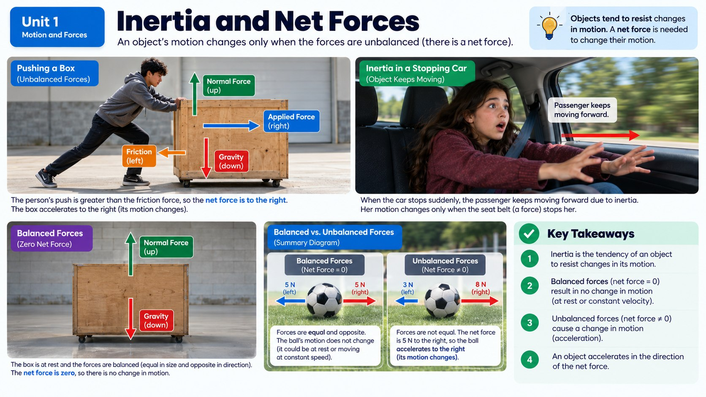

What actually causes the crash-test dummy to go flying off the truck bed the instant the truck hits the pole?

Meet Inertia
Every object in the universe has a property called inertia: the tendency of an object to keep doing whatever it's already doing (staying still if it's still, or continuing to move in a straight line at a steady speed if it's moving) unless something pushes or pulls on it to change that. Inertia isn't a force itself; it's more like an object's built-in stubbornness about changing its motion.
When the crash-test dummy is sitting in the open truck bed while the truck speeds along, the dummy is moving forward at the same speed as the truck. Its inertia means it "wants" to keep moving forward at that same speed, in that same straight line, unless some force acts on it to slow it down or change its path.
It's easy to accidentally think of inertia as some kind of force pushing or pulling on an object, but that's a common misconception worth clearing up. Inertia isn't a force at all: it's a property, like mass or color, that every object simply has. A force is something that acts on an object from the outside, like a push from an engine or a pull from gravity. Inertia, on the other hand, describes what an object will keep doing if no outside force acts on it. Saying "inertia pushed the dummy forward" isn't quite right; it's more accurate to say "nothing pushed on the dummy, so it kept moving forward on its own," which is really just Newton's first law of motion in action.
What Happens When the Truck Suddenly Stops
The instant the truck crashes into the pole, the truck itself experiences a huge force from the pole that brings it to a screeching halt. But the dummy is a separate object, only loosely resting on the truck bed: nothing is gripping it or strapping it down. Because of inertia, the dummy keeps moving forward at its original speed, right past the point where the truck stopped. From the dummy's point of view, it just keeps going in a straight line; it's the truck that suddenly disappeared out from under it. That's exactly why the dummy flies off the back: not because some mysterious force throws it forward, but because nothing stopped it from continuing to do what it was already doing.
You can see the same idea play out with anything loose inside a vehicle, not just a crash-test dummy. A cell phone sitting on the dashboard, a coffee cup in a cupholder, or a backpack on the back seat all have their own inertia too. During a sudden stop, every one of these objects keeps moving forward at the car's old speed unless something restrains it. That's exactly why an unsecured phone can go flying into the windshield area during even a moderate stop. The size of the object doesn't change the basic rule, only how dangerous the result is: a flying phone is a nuisance, but a flying passenger, or a heavy unsecured object like a toolbox in a truck bed, can be deadly. That's the real reason traffic safety campaigns tell people to secure loose cargo, not just passengers.
Mass, Inertia, and Net Force
Not all objects resist changes to their motion equally. The greater an object's mass (the amount of matter it's made of), the greater its inertia, meaning it takes a bigger force to speed it up, slow it down, or change its direction. A loaded moving truck has far more inertia than a skateboard, which is why it's so much harder to stop.
To actually change an object's motion, you need an unbalanced, or net, force acting on it. Forces are pushes or pulls, and objects often have multiple forces acting on them at once. When those forces cancel each other out completely, they're called balanced forces, and the object's motion doesn't change at all. But when the forces don't cancel out, there's a net force, and that net force is what changes an object's speed or direction.
Counting Up the Forces on One Object
Almost nothing in the real world has just a single force acting on it, so before you can find a net force you have to find every force in the picture. Imagine a student shoving a heavy wooden crate across a garage floor. Four separate forces are acting on that crate at the very same moment. The student's hands supply an applied force pushing it to the right. Friction between the crate's bottom and the floor pushes back to the left, resisting the slide. Gravity pulls the whole crate straight down toward the ground. And the floor pushes straight back up on the crate with something called the normal force. Here "normal" is a math word meaning "at a right angle to the surface," not "ordinary."
Forces are measured in units called newtons, written as N and named after Isaac Newton. One newton is not much force at all: holding up a small apple against gravity takes about one newton. Getting that crate sliding might take a few hundred. Every force also has a direction, and the direction counts just as much as the size does. A 50-newton push to the right and a 50-newton push to the left are exactly the same size but do completely opposite things to an object, which is why a force is never fully described by a number alone. That's also why force diagrams draw forces as arrows: the length of the arrow shows how strong the force is, and the way it points shows which direction it pushes or pulls.
Adding the Forces Up
The net force is what you get when you combine every one of those forces into a single overall push or pull. There are only two rules for combining them, and both are simpler than they sound. When two forces point in the same direction, you add them together: two students each pushing a stalled car forward with 300 N produce a net force of 600 N forward. When two forces point in opposite directions, you subtract the smaller one from the larger one, and the net force points in the direction of the bigger force.
Try it out on a soccer ball sitting on the grass. Suppose a player's foot pushes it to the right with 8 N while a strong gust of wind pushes it to the left with 3 N. Subtract: 8 N - 3 N = 5 N, so the net force is 5 N to the right, and the ball takes off to the right, the direction of the bigger force. Now suppose two players kick the ball from opposite sides at exactly the same instant, each with 5 N. Subtract again: 5 N - 5 N = 0 N. The net force is zero, and the ball's motion doesn't change at all, even though two real feet are genuinely pushing on it.
Those two examples hide a pattern worth memorizing: an object always changes its motion in the direction of the net force, and the bigger the net force, the bigger that change. If the net force points the same way an object is already moving, it speeds up. If the net force points opposite the motion, it slows down, which is exactly the job a brake, a parachute, and a seatbelt all do. And if the net force points sideways, the object's path curves in that direction instead of continuing straight, which is why a car can only turn a corner when the road pushes sideways on its tires.
Balanced Doesn't Mean Nothing Is Happening
That zero-net-force case deserves a closer look, because it trips up a lot of people. Balanced forces do not mean there are no forces on an object. It means the forces that are there cancel each other out perfectly. The crate sitting untouched on the garage floor still has gravity pulling it down with, say, 400 N, and the floor still pushes back up with exactly 400 N. Two real forces, both acting the entire time, adding up to a net force of zero. The crate stays put because its forces are balanced, not because it is somehow force-free.
The second tricky part is that balanced forces don't automatically mean an object is sitting still. Balanced forces mean the motion doesn't change. An object at rest with balanced forces stays at rest, but an object already moving with balanced forces keeps moving at the same speed in the same straight line. A car cruising down a flat highway at a steady 65 miles per hour has balanced forces on it: the engine drives it forward with the same strength that air resistance and friction push it backward. It's moving quickly, and the net force on it is still zero.
One last detail about that crate makes the whole idea click: forces can be balanced in one direction and unbalanced in another at the very same moment. While the student shoves the crate across the floor, the up-and-down forces stay balanced, because gravity down and the normal force up cancel out, which is why the crate neither sinks into the floor nor floats to the ceiling. But the side-to-side forces are not balanced. If the applied push is 200 N to the right and friction resists with 150 N to the left, the net force is 50 N to the right, and the crate speeds up in that direction. Same crate, same instant: balanced vertically, unbalanced horizontally.
Net Forces Back at the Crash Site
Now the opening scenario makes complete sense. While the truck rolls down the road at a steady speed, the forces on the dummy in the truck bed are balanced: gravity pulls it down, the truck bed pushes it up, and nothing meaningful pushes it forward or backward. Net force: zero. Change in motion: none. So it keeps cruising along at truck speed, exactly as inertia says it should.
The instant the truck hits the pole, the pole delivers an enormous unbalanced force to the truck, and the truck's motion changes in a fraction of a second. But that force never reaches the dummy. The forward-and-backward forces on the dummy still add up to about zero, so its motion still doesn't change, and it keeps traveling forward at the truck's old speed right off the back. A passenger strapped in inside the cab gets a completely different outcome, because the belt supplies a real backward force of hundreds or even thousands of newtons. That unbalanced force acts on the passenger's body, and their motion changes along with the car instead of continuing without it. Making sure a net force actually reaches you is the seatbelt's entire job.
Inertia at Every Scale
Inertia doesn't only apply to trucks and crash-test dummies. It applies to literally everything with mass, from a speck of dust to an entire planet. A dust particle floating in still air has so little mass, and therefore so little inertia, that even a faint breath can send it tumbling in a new direction. A loaded cargo ship, on the other hand, has so much inertia that it can take several kilometers of open water just to come to a complete stop after its engines shut off, even though the water itself is constantly producing some friction to slow it down.
Out in space, where there's no friction or air resistance to interfere, inertia becomes even more obvious: a spacecraft that fires its engines for a few seconds to speed up will keep coasting at that exact speed, in that exact direction, for years, with no additional force needed to keep it going. Thinking about inertia at these very different scales, from dust to spacecraft, helps show that it isn't a special rule just for car crashes. It's one of the most universal ideas in all of physics.
Real-World Connections
Roller Coaster Restraints
The over-the-shoulder harness on a roller coaster exists because of inertia: when the coaster suddenly changes direction, your body wants to keep moving in a straight line unless something forces it to change course.
The Tablecloth Trick
Pulling a tablecloth out fast enough can leave the dishes sitting in place: their inertia keeps them from moving with the cloth during that split second.
Meet the Scientist
Amusement Park Ride Safety Engineers
These engineers spend years testing restraint systems before a single rider ever climbs aboard. They calculate exactly how much force a harness needs to withstand during the fastest drop or sharpest turn, using crash-test dummies and computer models similar to the ones automotive safety engineers rely on.
Key Vocabulary
Bold, underlined words in the reading above are clickable too. Tap one to see its definition pop out. Or click or tap a card below to reveal the definition.
Explore More
Chapter Review
1. What is inertia?
2. Why does the crash-test dummy fly off the truck bed when the truck suddenly stops?
3. How does mass relate to inertia?
4. What is a net (unbalanced) force?
5. How does a seatbelt help a passenger during a sudden stop?
6. A soccer ball is pushed to the right with a force of 8 N while the wind pushes it to the left with a force of 3 N. What is the net force on the ball?
7. A car travels down a flat highway at a steady 65 miles per hour. What is true about the forces on it?
California Science Test (CAST) Practice
During an emergency stop test, a sedan and an SUV each apply the exact same braking force. Sensors recorded each vehicle's mass and the deceleration (the rate at which its speed decreased) that resulted from that identical braking force.
| Vehicle | Mass (kg) | Braking Force (N) | Deceleration (m/s²) |
|---|---|---|---|
| Sedan | 1200 | 6000 | 5.0 |
| SUV | 2400 | 6000 | 2.5 |
Which claim is best supported by the data in the table?